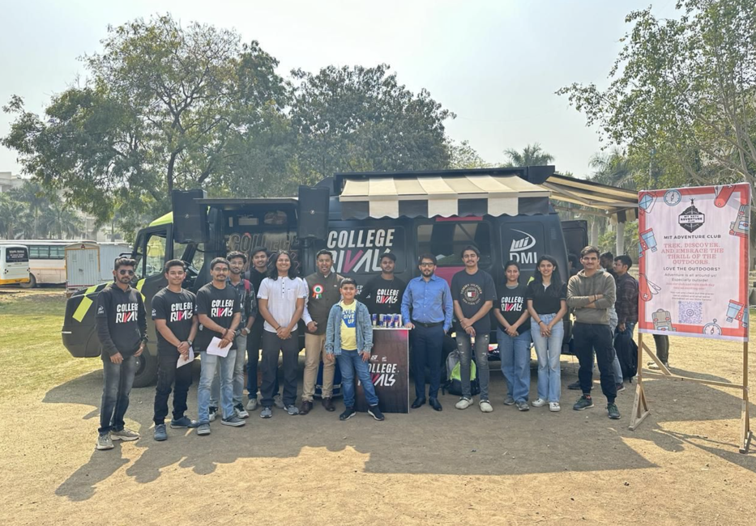
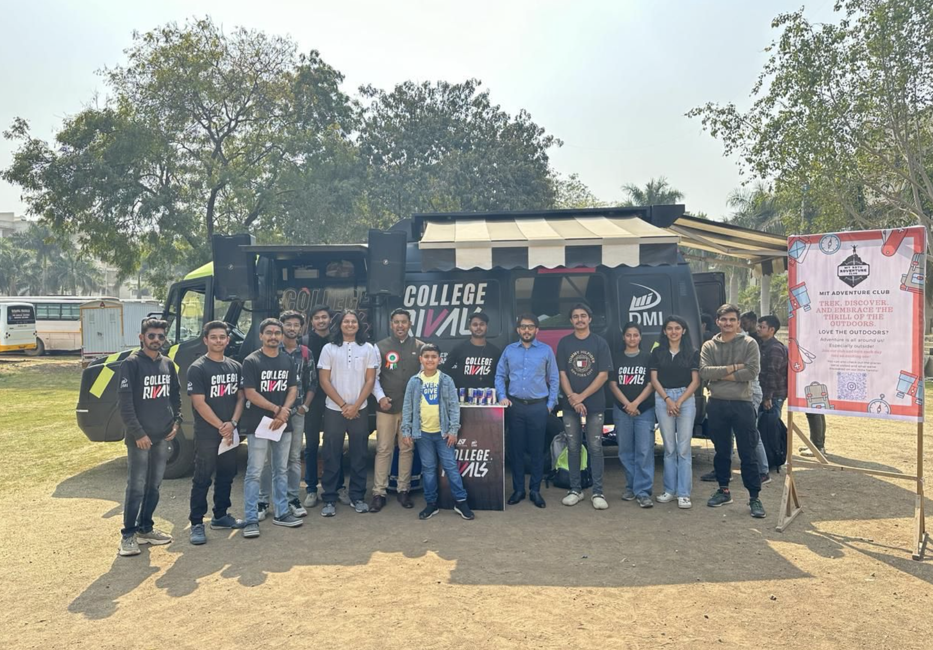

Flagship Events
SPECTRA Night
SPECTRA Culture Night was a magnificent event that took place under the night sky to celebrate Kojagiri Purnima, an auspicious occasion. This event aimed to unite people from diverse backgrounds by celebrating their traditions, music, dance, and food. The event was held on a moonlit night to create a celestial atmosphere that fostered unity and understanding. The evening began with a ceremonial lighting of lamps, symbolizing the triumph of light over darkness. Performers from different communities presenting traditional dances, music, and rituals associated with Kojagiri Purnima.
Football Tournament
The inter-college football event brought together 15 colleges for a thrilling display of skill, sportsmanship, and camaraderie. The tournament spanned several weeks and provided a platform for young athletes to showcase their prowess on the field while fostering a sense of unity among participating institutions. The event kicked off with great enthusiasm as teams from diverse backgrounds and regions competed for the coveted trophy. Each college brought a unique style of play, adding an exciting dynamic to the tournament. The matches were a testament to the dedication put in by players.
Ganesh Festival
Ganesh Chaturthi, also known as Vinayaka Chaturthi, is a festival that celebrates the birth of Lord Ganesha. He is a revered elephant-headed deity who is believed to remove obstacles and is the god of wisdom. The celebrations begin with the installation of elaborately crafted clay idols of Lord Ganesha in homes, public pandals (temporary structures), and temples. Devotees meticulously decorate the idols, often portraying Ganesha in various poses and themes. The entire community comes together to participate in the preparations, fostering a sense of unity and joy.
Garba Night
The Garba Night showcased a perfect blend of traditional and contemporary performances. The rhythmic footwork of the participants echoed the age-old traditions of Garba, while modern choreography infused a dynamic and youthful energy into the celebrations. Dance circles formed spontaneously as participants moved in sync with the beats, creating an immersive experience for everyone involved. The event was a celebration of unity and cultural diversity. The cultural exchange was evident as individuals from different regions came together to embrace the cultural heritage of Gujarat.

Plogathon
In a remarkable display of environmental stewardship and collective action, the Plogathon Drive, hosted by MIT Art, Design and Technology University, brought the attention to the imperative need for sustainable practices and environmental consciousness. As the clock struck 7:30 am, hundreds gathered for this significant event, marking National Youth Day 2024 with an ardent commitment to tackle waste management and foster a cleaner future. This event aimed to go beyond mere clean-up activities under the efforts of MIT ADT University, the Swedish Institute, and Sweden Alumni Network India
 (1).png)


 
